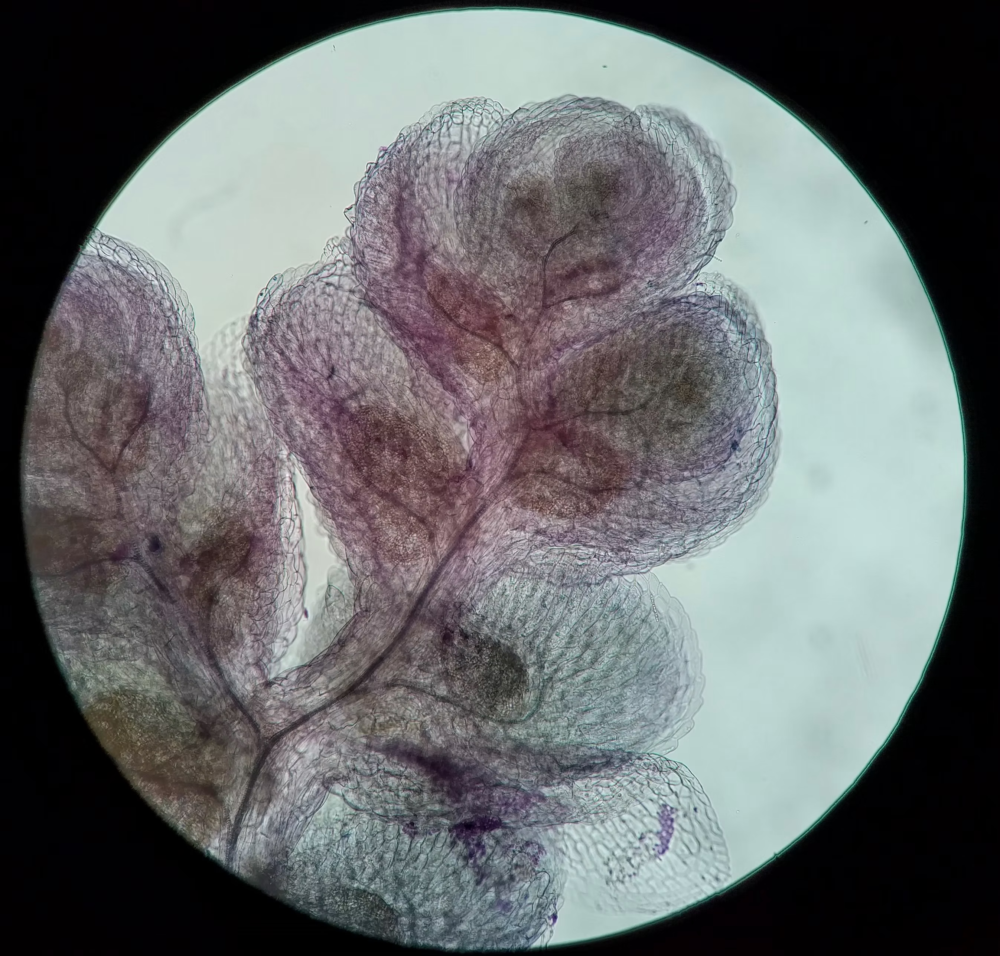
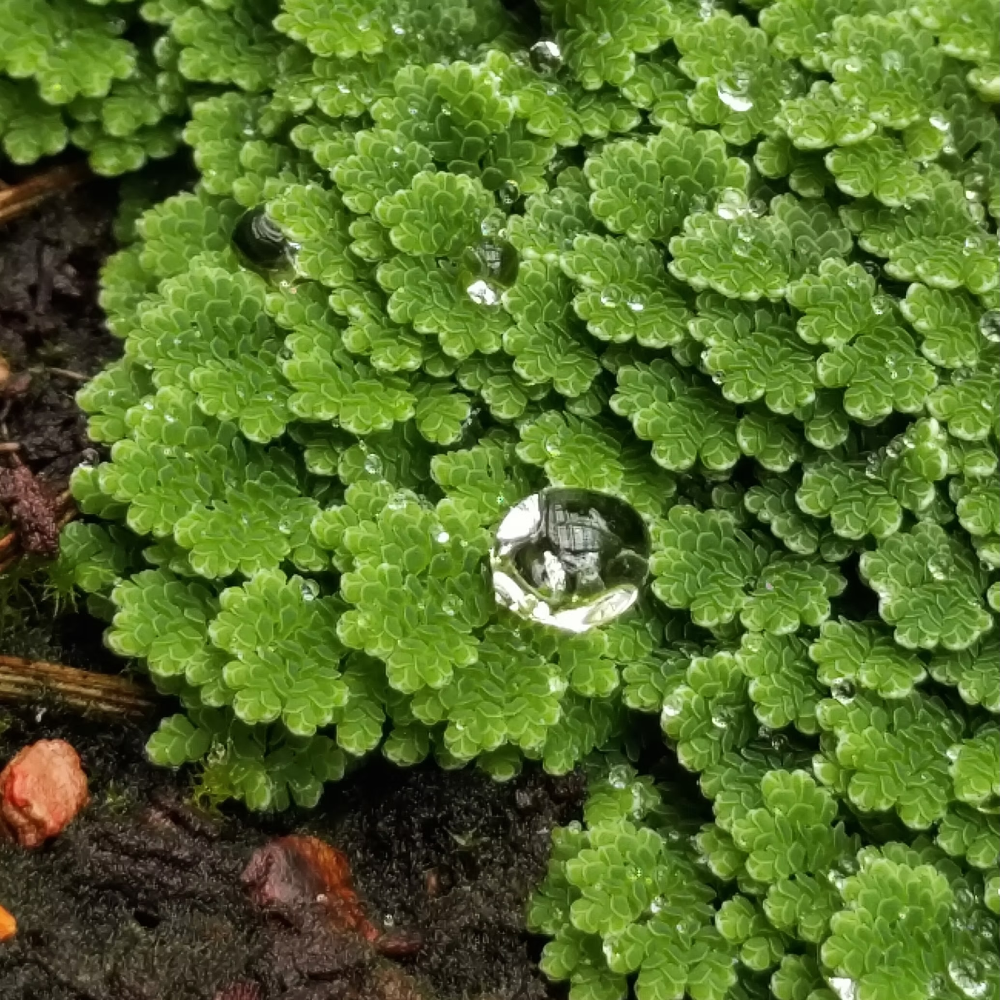
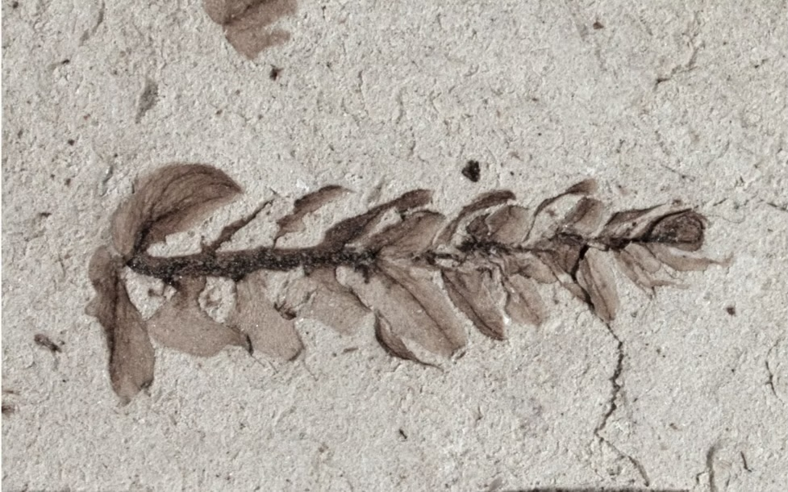
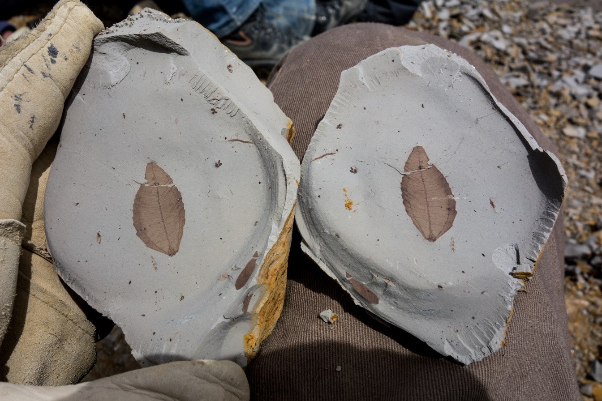
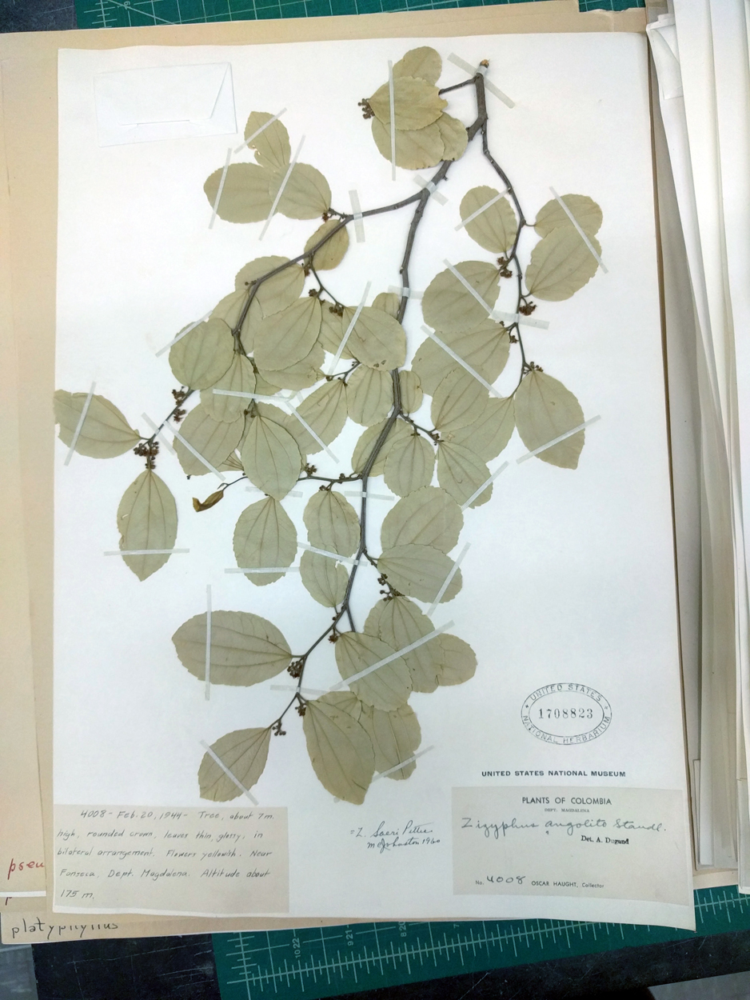
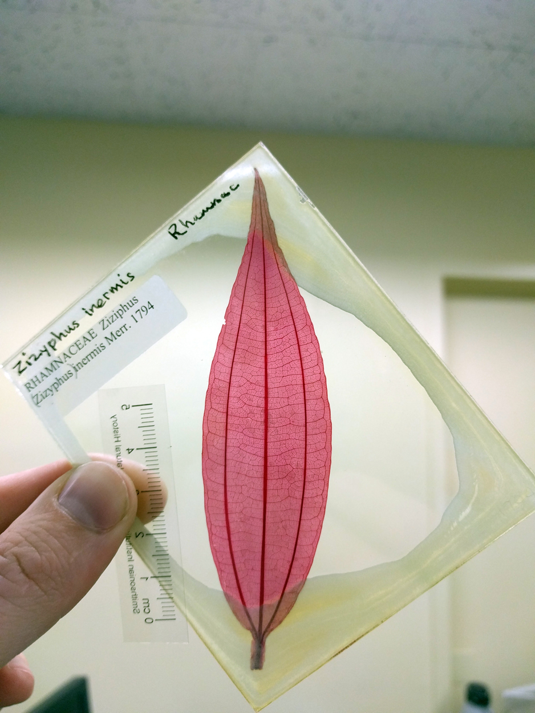
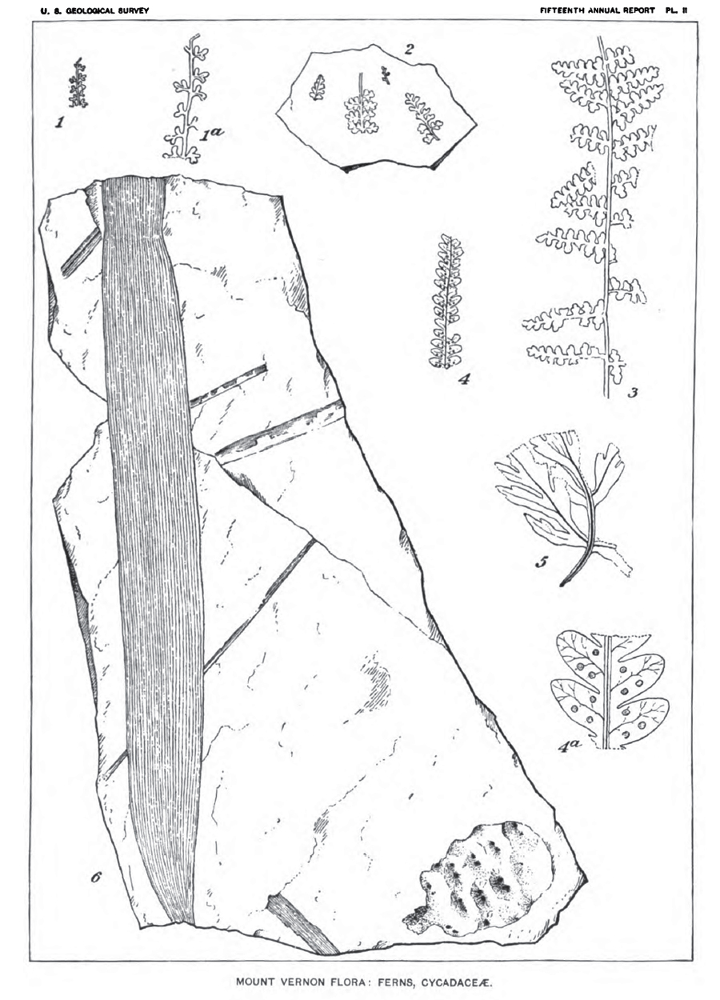

Blog
Field dispatches and notes on new papers.
-
Dispatch from the field #4
July 15, 2021After July 4th our team grew a bit. Eric Gorscak and Sasha Prokuda arrived in time for a fourth-of-July picnic in Powell, Wyoming.
-
Dispatch from the field #3
July 10, 2021The goal this summer was to collect fossils and geologic data from a Cretaceous lake deposit so that we can estimate its age.
-
Dispatch from the field #2
July 3, 2021We spent the first morning gathering supplies and dealing with some emails. In Worland we visited with Mike Bies while we filled up.
-
Dispatch from the field #1
July 2, 2021I started collecting plant fossils in the Bighorn Basin in 2009, but this was my first summer back to collect since starting at William Jewell.
-
Two new species of aquatic ferns
July 22, 2019Salviniales are an unusual group of ferns. Most ferns grow on land or on other plants, but these live in fresh water. Most ferns also produce only one kind of spore, but Salviniales produce two: small microspores and large megaspores. Although they're found throughout tropical and temperate regions, the group includes only about 100 species in five genera. One of these is the exceptional genus Azolla.

Azolla and Marsilea, two members of the Salviniales, growing together Azolla plants are tiny, free-floating, and highly reduced, with two-lobed leaves only about 1 mm long. There are only about five living species, and they're best known for their partnership with a nitrogen-fixing cyanobacterium. The cyanobacterium lives in a sheltered spot at the growing tip of the shoot and in a small cavity inside each leaf, where it converts nitrogen from the air into a form the plant can use.

A cleared Azolla shoot. The dark blue strands are vascular tissue, and the grey blobs are the cyanobacterial partner This partnership is very old. Genetic studies show that the cyanobacterium has handed off some of its basic maintenance genes to the fern, which only happens over a long shared history (Ran et al. 2010; Eily et al. 2019). People have taken advantage of it too: in Asia, farmers have used Azolla as a nitrogen-rich fertilizer in rice fields for centuries (Lumpkin and Plucknett, 1980).

Azolla growing on saturated ground Reading the fossil record
Azolla and its relatives have a rich fossil record, mostly in the form of scattered reproductive structures: the floats that carry megaspores, and clumps of microspores called massulae. The fossils show that the Salviniales are no older than the Jurassic, and that Azolla-like plants were around by the Late Cretaceous.
Reconstructing Azolla's history from reproductive structures alone is risky, though. We know of extinct plants with similar reproductive structures but very different stems and leaves (Rothwell and Stockey 1994). The best evidence comes from fossils where the reproductive and vegetative parts are found together or still attached. Most of that work has been done in the Northern Hemisphere, but sampling in the tropics and the Southern Hemisphere is catching up.
Two new species from Patagonia
In our new paper, we describe two species of Azolla from latest Cretaceous and earliest Paleocene deposits in Chubut, Argentina. The fossils were collected as part of a collaboration between Argentine and US scientists studying how the flora of Patagonia has changed since the Cretaceous.

Azolla keuja shoot tip. This fragment is about 1 cm long. These fossils are remarkably well preserved, with stems, leaves, roots, and reproductive structures. The two species, A. coloniensis and A. keuja, are the first from the Southern Hemisphere known from such complete remains. We're still exploring what they mean, but so far we've learned three things: 1) Even though they come from the same region and lived within a few million years of each other, the two species aren't closely related. That means Azolla was already diversifying by about 66 million years ago. 2) A. keuja doesn't fit into any of the groups scientists have used to organize living and fossil Azolla species. 3) The few living Azolla species are just a shadow of the group's extinct diversity. Any full picture of how Azolla evolved has to include the fossils.
-
More flowers from the early Paleocene of Patagonia
January 5, 2018Sixty-five million years ago, the east coast of Patagonia was much warmer and wetter than it is today. Fossil wood, leaves, and flowers from Chubut Province, Argentina indicate that where today there is only steppe there once was forest. Among the flowering trees were ancient Cunoniaceae, including Lacinipetalum spectabilum known from elaborate fossil flowers like the one shown below. The fossil flowers were gently buried in a muddy tidal channel, preserving the sepals, the delicate fringed petals, and the stamens with pollen. Lacinipetalum is most closely related to tribe Schizomerieae in the Cunoniaceae, which includes the New South Wales Christmas bush; but it differs in having a fully duplicated flower, with 8-10 sepals, 8-10 petals, and 4 carpels, rather than the normal condition of 4-6 sepals and petals and 2 carpels seen in most living Cunoniaceae. This group no longer occurs in South America, today they grow in Australasia and South Africa. The fossils are described in Jud et al. 2018, available on my publications page.

One of the Lacinipetalum spectabilum flowers from the Salamanca Formation showing nine sepals alternating with delicate laciniate petals -
Fossil Rhamnaceae flowers from Patagonia
July 27, 2017Flowers are some of the most most ephemeral stuctures a plant makes, so they are rare in the fossil record. But in the rocks of Chubut, Argentina, we found tiny fossil flowers from a forest that was growing in the aftermath of the asteroid impact that wiped out the dinosaurs. They belong to the buckthorn family, and they're helping us figure out which plants made it through one of Earth's greatest mass extinctions.

Two fossil flowers of Notiantha from the Salamanca Formation, one in plan view and one in longitudinal view Patagonia, 65 million years ago
At the start of the Cenozoic, a seaway separated South America from North America, but South America was still connected to Antarctica. The Drake Passage (the ocean gap between them today) hadn't opened yet. The world was much warmer then too, and forests probably stretched continuously across southern South America and coastal Antarctica, all the way to Australia. Shallow seas reached far inland into central Patagonia.
The southern Andes were still young, with many phases of mountain-building ahead, but they had already created basins to the east where sediments and fossils could accumulate up.
This region may have been a refuge for many plant species during the extinction triggered by the Chicxulub asteroid, which struck what is now Mexico about 66 million years ago. Fossil leaves, and the insect damage on them, show that biodiversity in southern South America was high compared to similar latitudes in North America.

Floral diagram for Rhamnaceae Why the flowers matter
Plant fossils are abundant in the early Paleocene Salamanca Formation, but what makes it exceptional is the fossil flowers. Flowers are especially useful to paleobotanists because they preserve many identifying features together, which lets us pin down what a plant was with much more confidence than a leaf alone allows.
In our paper on fossil Rhamnaceae flowers in PLOS ONE, we described fossil flowers and leaves from the Rhamnaceae, the family that includes buckthorns and jujube. Apart from some fossil pollen grains, these are the southernmost fossils of the family ever found.
Today, Rhamnaceae grow worldwide, and they're most diverse in Mediterranean climates with hot, dry summers. But the fossil record and the family tree of living species both suggest that this link to Mediterranean climates is fairly recent. Our fossils grew in warm, humid climates, long before the family diversified in drier habitats.
By carefully examining the features preserved in several specimens, we showed that the new genus, Notiantha, is most similar to Ziziphus (jujube), Sarcomphalus, and several other living members of the ziziphoid group of Rhamnaceae. The fossil leaves found with the flowers also resemble living members of the tribe Paliureae, the smaller group that includes Ziziphus and Sarcomphalus.

A fossil leaf associated with Notiantha Who survived?
These plants shared the early Paleocene forests of southern South America with palms, legumes, Akaniaceae, the laurel family (Lauraceae), a variety of southern conifers, and several others we're still studying. By comparing the Salamanca flora with fossils from the very end of the Cretaceous, we can piece together a list of southern survivors and work out which kinds of plants made it through the extinction.
-
Aloha from Volcanoes National Park
February 12, 2017Hawaiʻi is a hotspot for scientific research. My first encounter with research on the islands was a seminar on the diversity of endemic Hawaiian violets at Ohio University. Since then I've met people working on all kinds of projects, like leaf-mining moths and the relationship between food web complexity and forest patch size. I was excited to finally see the islands for myself. Between the native plants and animals, the petroglyphs, the clear night sky on Mauna Kea, and the eruptions on Kīlauea, I didn't expect much opportunity for paleobotany. But it turns out plant fossils abound on the lava flows.
Hawaiʻi is full of endemic species that evolved here over time. The Big Island is less than a million years old, Kauaʻi is about 5 million years old, and the oldest seamount in the Hawaiian-Emperor chain, Meiji, is about 82 million years old. As the islands formed and eroded, they were colonized by plants and animals from older islands and from the surrounding continents. Before people arrived, the diversity of plants and animals was set by the balance between dispersal, successful establishment on arrival, and diversification.
Chain of Craters Road in Volcanoes National Park crisscrosses old lava flows as it winds down the mountain to the southern coast. At Lua Manu Crater, I photographed some of the plants that have colonized the 1974 lava flow. We saw only a subset of the plants that can tolerate full sun and a near-total absence of soil.
A glance at the surrounding forest drives home that the ability to get established and survive, not just getting there, is what limits a new plant community on the lava. Seeds and spores reach the flows easily. Early arrivals barely have to compete with other plants. What matters most is surviving the harsh conditions.
We noticed Stereocaulon lichens growing on the rocks. Lichens are composite organisms made up of cyanobacteria and fungi. The cyanobacteria let the lichen photosynthesize and fix nitrogen from the air, while the fungus provides protection and helps pull nutrients from the rock. Lichens matter on the lava because they speed up weathering and soil formation. We found mosses already taking advantage of the new soils.
Several species of ferns peek out of the cracks and crevices, including Nephrolepis exaltata (common sword fern), Sadleria cyatheoides (ʻamaʻu), Pityrogramma austroamericana (gold fern), and Polypodium pellucidum (folded fern). When fern spores reach a suitable spot, small plants only a few cell layers thick called gametophytes germinate. They have no cuticle, but many are desiccation-tolerant. Surviving almost complete drying lets them hang on to the bare basalt between rains until the larger, more familiar fern sporophytes grow from the gametophytes.
Finally, there are the flowering plants. The largest and oldest individuals are Metrosideros polymorpha (ʻōhiʻa lehua), a Hawaiian endemic tree in the same family as Eucalyptus and cloves. Dubautia ciliolata was also common and a fun one to see, since it belongs to the silversword alliance, a group in the sunflower family that diversified across the Hawaiian Islands.
As the lava flowed through the forest in 1974, it burned and buried nearly everything in its path. But where it met moist tree trunks, the lava cooled against them and hardened into a shell. The trees themselves burned away in the heat, leaving molds that preserve each trunk's diameter and bark texture. These tree molds now dot the landscape, and in some areas molds of palm fronds and fruits are preserved too. They're fossils in the making.
As we kept walking, the clouds rolled in and it started to rain, so we continued down the road to the coast. In the low afternoon light we took in the Puʻu Loa petroglyphs. Until next time!
-
Imaging leaves on herbarium sheets
October 31, 2016Herbaria are vital sources of comparative data for botanists and paleobotanists alike, especially those of us interested in patterns of leaf venation. Traditionally, one way paleobotanists have gotten images of leaf venation from herbarium sheets is to remove a leaf from the sheet, clear it until the tissue is translucent, and then stain it with safranin. Safranin is a dye that binds to the lignin in plant tissue, which makes the veins stand out against the leaf mesophyll. The stained leaves are then mounted on glass slides.

Sarcomphalus saeri, USNH 1708823b. There are already large collections of cleared leaves around the world, including at the Smithsonian, Yale, Berkeley, and the Florida Museum of Natural History. Leaf clearing can give great results, but the process is slow and delicate: dried leaves are brittle to begin with, and they become flimsy and prone to tearing once they're cleared. Depending on the mounting medium, the finished slides may also need ongoing maintenance.

Ziziphus intermis When I was working on Potomacapnos, I found that some of the leaves I wanted to compare weren't in the cleared leaf collections. I cleared some leaves myself, but I also experimented with other ways of imaging venation. To my surprise, the method that worked best was also the easiest: photographing leaves right on the herbarium sheet with a DSLR camera and a powerful flash from below. The light passes straight through most thin or moderately thin herbarium sheets, and through the leaf, sometimes with spectacular results (Jud and Hickey, 2013).
I recently visited the Smithsonian again to take new venation photos for an upcoming project. Here's one example of the results.

Leaf ventation of Sarcomphalus saeri, USNH 1708823b. McNair (2015) has published a very similar approach, with more detail on the technique:
McNair, D. 2015. Imaging venation of broadleaf plants using DSLR cameras, transmitted light, and digital filters. Phytoneuron 39: 1–12.
-
Leaf-mining flies on early flowering plants
October 29, 2016A few years ago I was digging through Lester Ward’s old fossil collections at the Smithsonian, looking for leaves of flowering plants hiding under the wrong label. Many early small angiosperm leaves got filed as ferns back in the 1800s, so I’ve gotten pretty good at spotting them. Some of the features I look for are irregular-reticulate venation, glandular teeth along the leaf margin, and the shape of lobes and sinuses along the leaf margin. This is the search image that I developed while working on Potomacapnos apeleutheron (Jud and Hickey, 2013) and Fairlingtonia thyrsopteroides (Jud 2015). At one point, I came across a small angiosperm leaf from the Albian of Virginia that had a little trail just inside the margin of one of the lobes. I think Ward was an excellent paleobotanist for his time, but this specimen has a leaf mine that Ward had apparently not noticed, or at least was not illustrated (Ward 1895, Plate II, Figure 5).

Plate 2 of Ward 1895. The fossil is figure 5 Leaf-miners are insects that live inside of leaves during their larval stage. They feed on the inner leaf mesophyll and leave a conspicuous trail as they grow. Several different groups of insects have independently evolved the leaf-mining behavior including Lepidoptera (butterflies and moths), Diptera (flies), Hymenoptera (sawflies), and Coleoptera (beetles). The mines of the different groups can be distinguished by the morphology of the mines. When fossil leaves are well-preserved, leaf mines are preserved too, providing an opportunity to study plant-insect interactions in the fossil record. I showed the leaf to my colleague Dr. Jay Sohn, also a graduate student at the University of Maryland at the time. He set out to identify the miner while I set about describing and identifying the leaf.

Leaf mines on white snake root, or Ageratina altissima (Asteraceae) The results of our analysis were published in Cretaceous Research in 2016. The leaf contributes to the growing number of herbaceous eudicots known from the Lower Cretaceous Potomac Group deposits and highlights the value of museum collections as sources of new discoveries. The mine has features that are characteristic of leaf-mining agromyzid flies that are most closely associated with asterids today, which did not exist in the Early Cretaceous. Some leaf mining flies today feed on Ranunculales (buttercups and relatives) which parobably were present during the Early Cretaceous, but those relationships are probably the result of recent host-switching from asterids to Ranunculales (Winkler et al. 2009). If the fossil is and agromyzid fly mine, it suggests that they may have started out associated with basal eudicots, later expanded their hosts to include other groups where they diversified, and the pre-asterid history has been lost to extinction.

Vernifolium tenuiloba from Mount Vernon, Virginia. Scale bar 1 cm.
Fossils and genomes
In evolutionary biology, living and extinct species tell complementary stories. In 2018, the complete genome of Azolla filiculoides was published (Li et al. 2018), and it's exciting to think about what it will teach us about how this group evolved, how partnerships like the one with its cyanobacterium arise, and how we might use Azolla's nitrogen-fixing partnership in agriculture. We'll probably never get DNA from extinct Azolla species, but without the fossil record we'd never see the full range of shapes and lifestyles this group has had. Keep digging.
You can see more photos in our open-access paper on the Patagonian Azolla fossils.
P.S. I'm looking for photos of living Azolla nilotica, an African species. If you have access to it, please get in touch.